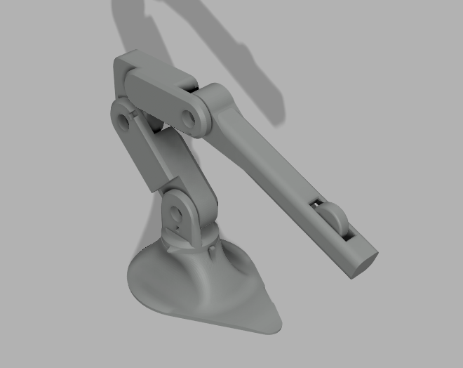
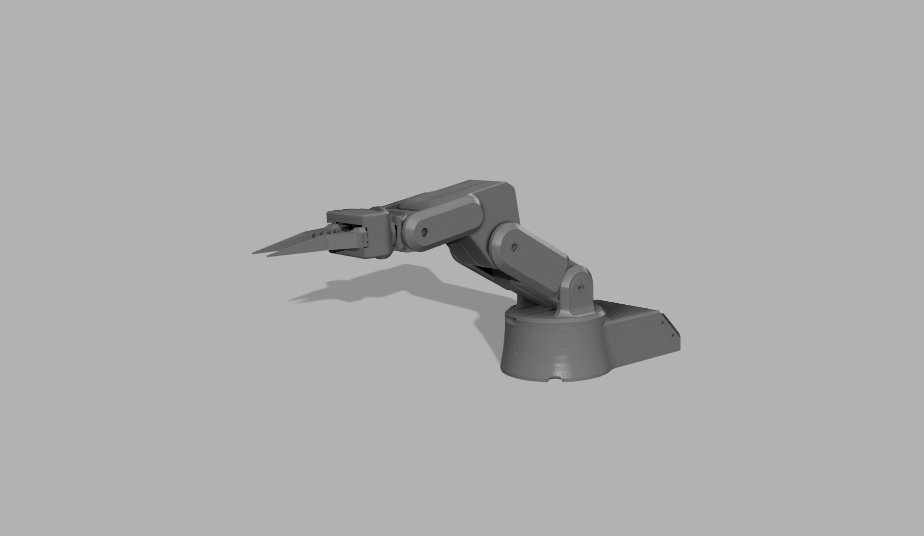

STEROWANIE

Kontroler typu master intuicyjnie leży w dłoni operatora, dzięki czemu sterowanie ramieniem roboczym jest naturalne i precyzyjne bez potrzeby kursów czy nauki. Konstrukcja została zaprojektowana z myślą o intuicyjności użytku i komforcie pracy oraz pewnym, bezpiecznym sterowaniu, powyżej wstępna wizualizajca. Kontroler jest wyposażony w:
- Czujnik dotyku zapewniający bezpieczeństwo poprzez blokadę ruchu w przypadku braku kontaktu z operatorem. Blokuje jeśli operator nie trzyma kontrolera w dłoni.
- Enkoder obrotowy pozwala na aktywne modifikacje skali ruchu w zależności od potrzeb operatora. W skali 1:10, centymetr ruchu operatora - milimetr ruchu ramienia wykonawczego.
- Przyciski umożliwiające zmianę ustawień ramienia czy paramerty wymiennych głowic.
OPIS KONCEPCJI
- Skalowanie ruchu i filtrowanie drgań zapewniają lepszą precyzję oraz płynność działania podczas pracy.
- Enkodery oraz czujniki dotyku poprawiają dokładność odwzorowania ruchów i zwiększają precyzje.
- Ergonomiczna konstrukcja i stabilna podstawa umożliwiają wygodne, długotrwałe użytkowanie.
- Kompaktowy rozmiar pozwala na łatwe umieszczenie urządzenia w każdym warsztacie lub stanowisku roboczym.
- Oprogramowanie umożliwia płynniejsze, bardziej kontrolowane ruchy ramienia i precyzyjne wykonywanie zadań.
- Wymienne głowice, takie jak chwytak, lutownica czy kamera z powiększeniem, zwiększają uniwersalność zastosowań.
- Stabilna, serwisowa konstrukcja ułatwia konserwację, naprawy oraz dalszą rozbudowę projektu.
RAMIĘ WYKONAWCZE

Ramię typu slave przenosi ruchy operatora na precyzyjne działania nad stanowiskiem pracy. Stabilna konstrukcja oraz odpowiednio dobrany układ napędów zapewniają płynność i powtarzalność ruchów w zadaniach serwisowych, minimalizując margines błędu i usprawniając pracę serwisanta.
- 6 stopni swobody (osie rotacji) umożliwia pełen zakres ruchów roboczych.
- Zakładana precyzja pozycjonowania <0,6 mm co umożliwia dokładne wykonywanie zadań wymagających wysokiej powtarzalności.
- Wymienne głowice, m.in. lutownica, kamera z powiększeniem, chwytak (widoczny na zdjęciu powyżej).
- Dedykowany do lutowania kompotentów SMD oraz precyzyjnych prac.